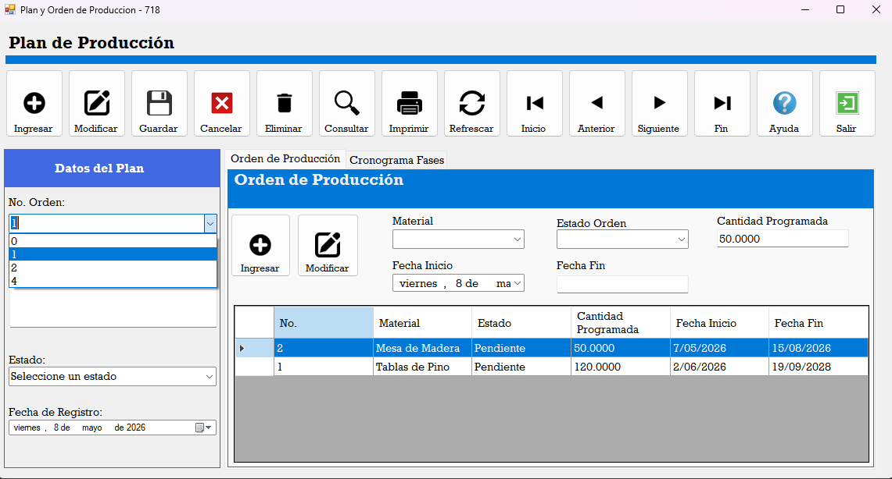
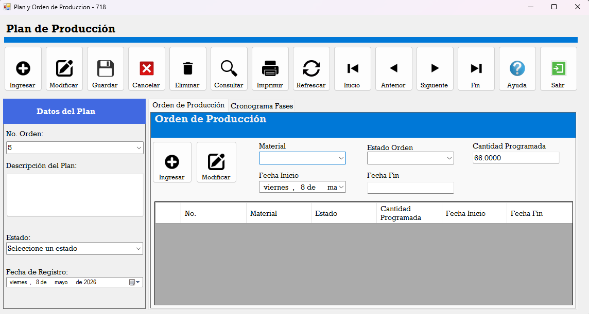
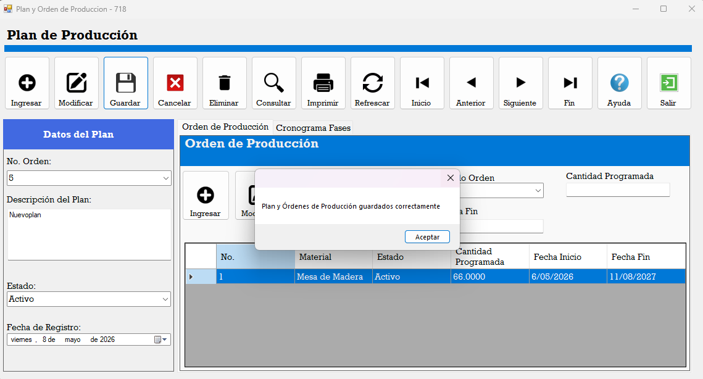
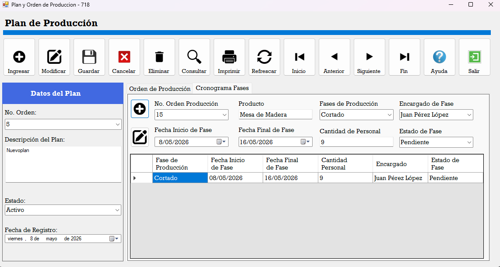
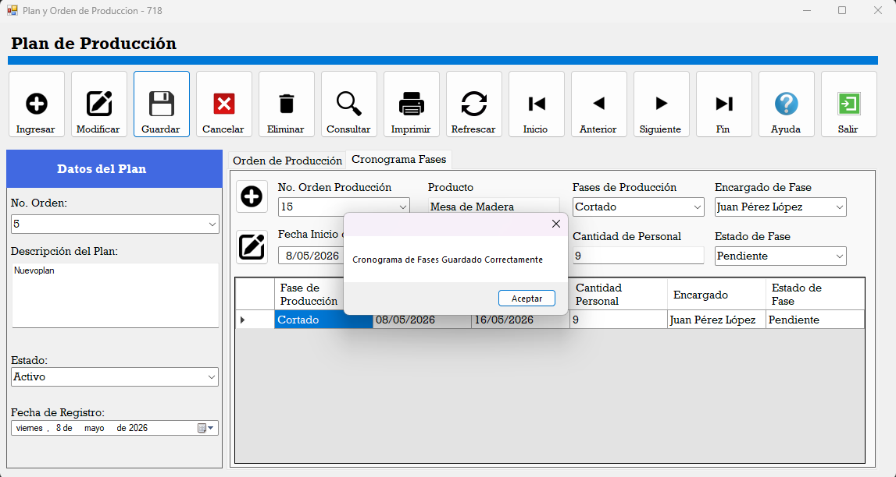

Para el ingreso de datos, primero se selecciona un No. De Orden, si este tiene ya datos asignaos se cargará En el datagrid los datos previamente antes guardados, si el usuario lo ve necesario puede usar el botón de mofidicar en la parte de ordenes de producción

Si al seleccionar el No. Orden no se cargan datos, es porque esta orden no tiene asignado de momento ninguna orden de producción, por lo que debe de llenar los campos, seleccionando un tipo de material, el estado de la orden, el campo de cantidad se llenará automáticamente, al igual que el campo de fecha fin, pues este es un campo calculado Usando como referencia la fecha de inicio que esta si debe ser seleccionada

Al llenar los datos de la orden de producción deberá presionar el botón de ingresar el cual cargará previamente en la datagridview, una vez cargado los datos Debe percatarse de tener llenos también los campos de datos de plan, una vez corroborado todo, presionará el botón guardar de la parte superior y tanto los datos del plan como de la orden Serán guardado en la base de datos

Ya una vez ubicado en la pestaña de cronograma de fases deberá de llenar cada uno de los campos mostrados, seleccionará el No. Orden, un producto, encargado, fecha inicio y fecha fin, estos campos deben de estar en el rango descrito en la orden, si coloca una fecha fuera de ese rango no se permitirá guardar datos, por último ingresa cantidad de personal Y el estado de la fase. Ya con los datos ingresado deberá presionar el botón de ingresar para que los datos sean cargados en el datagridview

Una vez verificado que todos los datos estén correctos deberá presionar el botón de guardar el cual aparece en la parte superior del formulario Y los datos serán cargados en la base de datos
